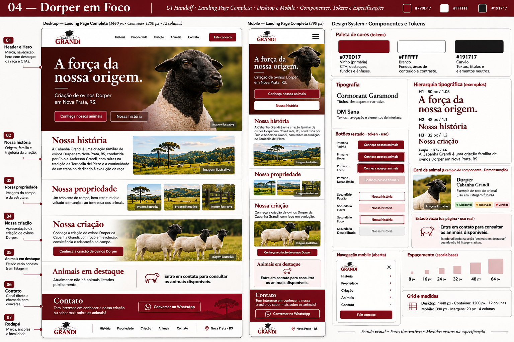

Demonstração · imagem ilustrativa
Demonstração · imagem ilustrativaDisponível
Identificação do animal
Categoria · informação confirmada
O conteúdo deste card demonstra a estrutura. Não representa uma oferta real.
Uma biblioteca de interface para contar a história da família Grandi com clareza, presença e consistência.
NOVA PRATA · RIO GRANDE DO SUL
Imagem ilustrativa · direção fotográfica
O que este documento entrega
Tokens, anatomia, variantes, estados e contratos. Exemplos reais em HTML/CSS para orientar qualquer ferramenta de código.
componentes definidos
CG/Component
faixas responsivas
360 → 1440px
Vinho para identidade e ação. Branco para respiro. Tons semânticos usados apenas para comunicar estados.
--cg-brand--cg-brand-hover--cg-bg--cg-surface--cg-text--cg-mutedUm único status por animal. A cor sempre acompanha um rótulo textual.
| Combinação | Razão |
|---|---|
| Branco / vinho | 11,32:1 |
| Texto / branco | 17,85:1 |
| Texto auxiliar / branco | 6,93:1 |
AA para texto normal. Fotografias exigem avaliação do overlay no recorte final.
Fonte de verdade: tokens.json → generate-tokens.py → tokens.css. As cores semânticas referenciam primitivas; não duplicar valores em componentes.
Cormorant Garamond cria a voz editorial. DM Sans mantém a interface direta e legível.
Raio: 4px · borda: 1px · ícones: 20/24px · alvo de toque: 48px.
Gutter 24px. Margens de 120px em uma tela de 1440px. Mobile: margem 20px e gutter 16px.
| Regra | Desktop ≥1024 | Tablet 768–1023 | Mobile <768 |
|---|---|---|---|
| Container | min(1200, tela − 64) | tela − 48 | tela − 40 |
| Colunas / gutter | 12 / 24px | 8 / 24px | 4 / 16px |
| Padding de seção | 96px | 72px | 56px |
| Header mínimo | 96px | 80px | 80px |
As variantes compartilham dimensões e comportamento. O estilo comunica a prioridade, não uma função diferente.
48 × 48px · ícone 24px · nome acessível obrigatório.
[padding 24] [ícone opcional] [gap 8] [texto] [padding 24]
Altura mínima 48px · texto 16/24 · peso 600 · transição 160ms. Focus com anel duplo. Disabled usa atributo nativo; links sem destino são omitidos.
O card representa um animal confirmado. O estado vazio orienta o visitante quando não há itens publicados.
Demonstração · imagem ilustrativaCategoria · informação confirmada
O conteúdo deste card demonstra a estrutura. Não representa uma oferta real.
Entre em contato para consultar os animais disponíveis.
Uma introdução curta contextualiza a próxima seção.
Eyebrow opcional · título h2 · apoio opcional. Gap interno 16px; gap até conteúdo 32px.
Card: imagem 4:3 · corpo 24px · gap 16px · raio 4px. Grade de animais: 3 / 2 / 1 colunas. Reservado e vendido usam “Consultar outros animais”.
A experiência permanece em uma única página. As âncoras conectam história, propriedade, criação, animais e contato.
Clique no ícone para testar o diálogo. Escape fecha; foco retorna ao acionador.
Aplicar a logo original aprovada. O texto “GRANDI” neste documento é uma assinatura provisória, não uma nova marca.
Desktop: caixa até 176 × 64px.
Mobile: até 136 × 48px.
Preservar proporção; não cortar ou esticar.
Marca · âncoras · localidade / copyright.
Padding vertical 40px. Mobile em coluna, gap 24px. Ano dinâmico; perfis sociais só quando confirmados.
Os componentes formam uma landing page responsiva. A prévia pode ser inspecionada em diferentes larguras.

Prancha de referência ilustrativa. A especificação textual prevalece sobre textos, medidas e estados desenhados na imagem.
Uma estrutura editorial com comportamento definido, conteúdo validável e espaço para fotografias reais.
H1 80/84 desktop; 44/48 mobile. Largura de texto até 560px. Mínimo 640px desktop; altura automática no mobile. Overlay vinho mantém a legibilidade.
CTA primário → #animais. Secundário → #historia. Foto preserva cabeça e orelhas no recorte.
Gap 48px desktop, 24px mobile. Empilhar texto antes da imagem. Sem criar retratos fictícios dos familiares.
Raízes em Torricella del Pizzo, Nova Prata e iniciativa de Ênio e Anderson Grandi. Copy sujeita à revisão.
3 / 2 / 1 colunas. Sem carrossel na base. Alt e legenda por imagem; fotos reais ainda pendentes.
Conheça a cabanha e os animais.
Exemplo de componente. Sem número confirmado, o protótipo omite o link WhatsApp e informa a pendência.
| Ordem | Seção / âncora | Composição |
|---|---|---|
| 01 | Hero / #inicio | Foto + texto + 2 ações |
| 02 | História / #historia | Texto 6 colunas + imagem 6 colunas |
| 03 | Propriedade / #propriedade | Galeria responsiva |
| 04 | Criação / #criacao | Apresentação da raça / fotografia |
| 05 | Animais / #animais | Estado vazio ou até 6 cards reais |
| 06 | Contato / #contato | Texto + canal oficial |
| 07 | Rodapé | Marca, âncoras e localidade |
Os arquivos descrevem o mesmo sistema visual em formatos legíveis para pessoas e ferramentas. Abra o pacote extraído para preservar imagens e fontes.
| Arquivo | Função |
|---|---|
| index.html | Documento visual navegável e inspetor de componentes. |
| tokens.json + tokens.css | 123 tokens tipados; 97 custom properties CSS derivadas. |
| components.css | Estilos reutilizáveis dos exemplos e do protótipo. |
| components.schema.json | Manifesto de 14 componentes: props, variantes, estados e regras. Não é um JSON Schema de validação. |
| contracts.ts | Contratos TypeScript independentes de framework. |
| HANDOFF.md | Especificação textual, comportamento e critérios de revisão. |
| landing.html | Protótipo HTML de referência; conteúdo e contatos pendentes. |
Logo original, fotografias autorizadas, texto revisado, contatos oficiais e dados dos animais.
Este pacote é um documento HTML/CSS e uma especificação técnica. Não é um arquivo .fig nativo, nem uma aplicação React pronta. Os contratos servem de base para implementação.
Fontes locais: Cormorant Garamond + DM Sans, distribuídas com licença OFL. O documento funciona offline após extrair o ZIP.